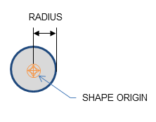
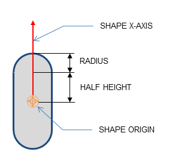
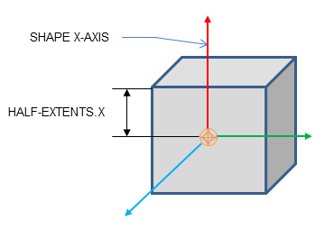
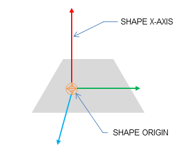
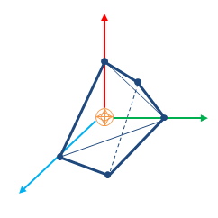
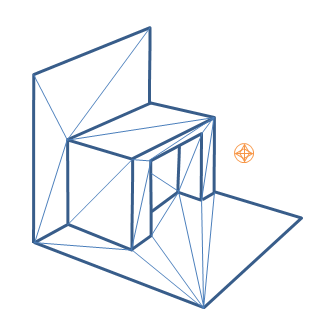
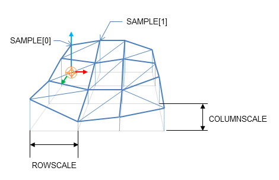
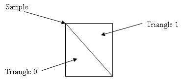
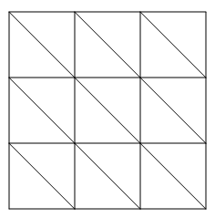

Geometry¶
Introduction¶
This section discusses the PhysX geometry classes. Geometries are used to build shapes for rigid bodies, as collision triggers, and as volumes in PhysX' scene query system. PhysX also provides standalone functions for testing intersection between geometries, raycasting against them, and sweeping one geometry against another.
Geometries are value types, and inherit from a common base class, PxGeometry. Each geometry class defines a volume or surface with a fixed position and orientation. A transform specifies the frame in which the geometry is interpreted. For plane and capsule geometry types PhysX provides helper functions to construct these transforms from common alternative representations.
Geometries fall into two classes:
- primitives (PxBoxGeometry, PxSphereGeometry, PxCapsuleGeometry, PxPlaneGeometry) where the geometry object contains all of the data
- meshes or height fields (PxConvexMeshGeometry, PxTriangleMeshGeometry, PxHeightFieldGeometry), where the geometry object contains a pointer to a much larger object (PxConvexMesh, PxTriangleMesh, PxHeightField respectively) You can use these objects with different scales in each PxGeometry type which references them. The larger objects must be created using a cooking process, described for each type below.
When passed into and out of the SDK for use as simulation geometry, the geometry is copied into and out of a PxShape class. It can be awkward in this case to retrieve the geometry without knowing its type, so PhysX provides a union-like wrapper class (PxGeometryHolder) that can be used to pass any geometry type by value. Each mesh (or height field) has a reference count that tracks the number of PxShapes whose geometries reference the mesh.
Geometry Types¶
Spheres¶
A PxSphereGeometry is specified by one attribute, its radius, and is centered at the origin.
Capsules¶
A PxCapsuleGeometry is centered at the origin. It is specified by a radius and a half-height value by which its axis extends along the positive and negative X-axis.
To create a dynamic actor whose geometry is a capsule standing upright, the shape needs a relative transform that rotates it around the Z-axis by a quarter-circle. By doing this, the capsule will extend along the Y-axis of the actor instead of the X-axis. Setting up the shape and actor is otherwise the same as for the sphere:
PxRigidDynamic* aCapsuleActor = thePhysics->createRigidDynamic(PxTransform(position));
PxTransform relativePose(PxQuat(PxHalfPi, PxVec(0,0,1)));
PxShape* aCapsuleShape = aCapsuleActor->createShape(PxCapsuleGeometry(radius, halfHeight),
aMaterial);
aCapsuleShape->setLocalPose(relativePose);
PxRigidBodyExt::updateMassAndInertia(*aCapsuleActor, capsuleDensity);
aScene->addActor(aCapsuleActor);
The function PxTransformFromSegment() converts from a line segment defining the capsule axis to a transform and halfheight.
Boxes¶
A PxBoxGeometry has three attributes, the three extents halved:
PxShape* aBoxShape = aBoxActor->createShape(PxBoxGeometry(a/2, b/2, c/2), aMaterial);
Where a, b and c are the side lengths of the resulting box.
Planes¶
Planes divide space into "above" and "below" them. Everything "below" the plane will collide with it.
The Plane lies on the YZ plane with "above" pointing towards positive X. To convert from a plane equation to an equivalent transform, use the function PxTransformFromPlaneEquation(). PxPlaneEquationFromTransform() performs the reverse conversion.
A PxPlaneGeometry has no attributes, since the shape's pose entirely defines the plane's collision volume.
Shapes with a PxPlaneGeometry may only be created for static actors.
Convex Meshes¶
A shape is convex if, given any two points within the shape, the shape contains the line between them. A PxConvexMesh is a convex polyhedron represented as a set of vertices and polygonal faces. The number of vertices and faces of a convex mesh in PhysX is limited to 255.
Creating a PxConvexMesh requires cooking. It is assumed here that the cooking library has already been initialized (see Startup and Shutdown.) The following steps explain how to create a simple square pyramid.
First, define the vertices of the convex object:
static const PxVec3 convexVerts[] = {PxVec3(0,1,0),PxVec3(1,0,0),PxVec3(-1,0,0),PxVec3(0,0,1),
PxVec3(0,0,-1)};
Then construct a description of the convex data layout:
PxConvexMeshDesc convexDesc;
convexDesc.points.count = 5;
convexDesc.points.stride = sizeof(PxVec3);
convexDesc.points.data = convexVerts;
convexDesc.flags = PxConvexFlag::eCOMPUTE_CONVEX;
Now use the cooking library to construct a PxConvexMesh:
PxDefaultMemoryOutputStream buf;
PxConvexMeshCookingResult::Enum result;
if(!cooking.cookConvexMesh(convexDesc, buf, &result))
return NULL;
PxDefaultMemoryInputData input(buf.getData(), buf.getSize());
PxConvexMesh* convexMesh = physics->createConvexMesh(input);
Finally, create a shape using a PxConvexMeshGeometry which instances the mesh:
PxShape* aConvexShape = aConvexActor->createShape(PxConvexMeshGeometry(convexMesh), aMaterial);
A user can optionally provide a per-instance PxMeshScale in the PxConvexMeshGeometry. The default scale is the identity.
Convex Mesh cooking¶
Convex Mesh cooking transforms the mesh data into a form which allows the SDK to perform efficient collision detection. The input to cooking is defined using the input PxConvexMeshDesc.
There are different ways to fill in this structure, depending on whether you want to produce a convex mesh starting from just a cloud of vertices, or whether you have the vertices and faces of a polyhedron already.
Vertex points only are provided¶
When providing only vertices, set the PxConvexFlag::eCOMPUTE_CONVEX flag to compute the mesh:
PxConvexMeshDesc convexDesc;
convexDesc.points.count = 20;
convexDesc.points.stride = sizeof(PxVec3);
convexDesc.points.data = convexVerts;
convexDesc.flags = PxConvexFlag::eCOMPUTE_CONVEX;
convexDesc.maxVerts = 10;
PxDefaultMemoryOutputStream buf;
if(!cooking.cookConvexMesh(convexDesc, buf))
return NULL;
The algorithm tries to create a convex mesh from the source vertices. The field convexDesc.vertexLimit specifies the limit for the maximum number of vertices in the resulting hull.
This routine can sometimes fail when the source data is geometrically challenging, for example if it contains a lot of vertices close to each-other. If cooking fails, an error is reported to the error stream and the routine returns false. In this case the best option is to set both PxConvexFlag::eCOMPUTE_CONVEX and PxConvexFlag::eINFLATE_CONVEX to switch to an alternate mesh generation function that allows inflation of the source data (by a margin defined by PxCookingParams::skinWidth). Inflation allows more freedom to correct problematic geometry. Without inflation, cooking creates a convex mesh whose vertices are a subset of the original vertices, and the number of vertices is guaranteed to be no more than the specified maximum. Inflation will bevel sharp edges, which may add new vertices beyond the specified maximum. In addition, beveling may create small triangles, so PxCookingParams::skinWidth needs to be chosen carefully. TODO(Ales): - yes, but how?
If PxConvexFlag::eCHECK_ZERO_AREA_TRIANGLES is used, the algorithm does not include triangles with area less than PxCookingParams::areaTestEpsilon. If the algorithm cannot find 4 initial vertices without a small triangle, PxConvexMeshCookingResult::eZERO_AREA_TEST_FAILED is returned. This does mean that the provided vertices were in a very small area and could not produce a valid hull. Please note, if this flag is used in combination with eINFLATE_CONVEX, the newly added triangles by the inflation algorithm are not checked (size of the triangles depends on PxCooking::skinWidth). The toolkit helper function PxToolkit::createConvexMeshSafe illustrates the most robust strategy for convex mesh cooking. First it tries to create the hull without inflation. If that fails it tries inflation, and if that also fails, uses an AABB or OBB.
Convex cooking applies the following steps:
- clean vertices - remove duplicates etc.
- Find a subset of vertices that encloses the input set, that is at most vertexLimit
- If inflation is required, bevel sharp edges and add additional vertices.
- Create polygons for the new faces
- Compute vertex map table (requires at least 3 neighbor polygons for each vertex).
- Check polygon data - verify all vertices are on or inside the hull, etc.
- Compute mass and inertia tensor assuming density is 1
- Save data to stream.
Vertex points and polygons are provided¶
To create a PxConvexMesh given a set of input vertices (convexVerts) and polygons (hullPolygons):
PxConvexMeshDesc convexDesc;
convexDesc.points.count = 12;
convexDesc.points.stride = sizeof(PxVec3);
convexDesc.points.data = convexVerts;
convexDescPolygons.polygons.count = 20;
convexDescPolygons.polygons.stride = sizeof(PxHullPolygon);
convexDescPolygons.polygons.data = hullPolygons;
convexDesc.flags = 0;
PxDefaultMemoryOutputStream buf;
if(!cooking.cookConvexMesh(convexDesc, buf))
return NULL;
When points and polygons are provided, the SDK validates the mesh and creates the PxConvexmesh directly. This is the fastest way to create a convex mesh. Note that the SDK requires at least 3 neighbor polygons for each vertex. Otherwise acceleration structure for PCM is not created and it does result in performance penalty if PCM is enabled.
(NOTE: the SDK should reject such a mesh as invalid)
Internal steps during convex cooking:
- Compute vertex map table, requires at least 3 neighbor polygons for each vertex.
- Check polygons data - check if all vertices are on or inside the hull, etc.
- Compute mass and inertia tensor assuming density 1.
- Save data to stream.
Triangle Meshes¶
Like graphical triangle meshes, a collision triangle mesh consists of a collection of vertices and the triangle indices. Triangle mesh creation requires use of the cooking library. It is assumed here that the cooking library has already been initialized (see Startup and Shutdown.):
PxTriangleMeshDesc meshDesc;
meshDesc.points.count = nbVerts;
meshDesc.points.stride = sizeof(PxVec3);
meshDesc.points.data = verts;
meshDesc.triangles.count = triCount;
meshDesc.triangles.stride = 3*sizeof(PxU32);
meshDesc.triangles.data = indices32;
PxDefaultMemoryOutputStream writeBuffer;
bool status = cooking.cookTriangleMesh(meshDesc, writeBuffer);
if(!status)
return NULL;
PxDefaultMemoryInputData readBuffer(writeBuffer.getData(), writeBuffer.getSize());
return physics.createTriangleMesh(readBuffer);
Alternatively PxTriangleMesh can be cooked and directly inserted into PxPhysics without stream serialization. This is useful if real-time cooking is required. It is strongly recommended to use offline cooking and streams. Example how to improve cooking speed if needed:
PxTolerancesScale scale;
PxCookingParams params(scale);
// disable mesh cleaning - perform mesh validation on development configurations
params.meshPreprocessParams |= PxMeshPreprocessingFlag::eDISABLE_CLEAN_MESH;
// disable edge precompute, edges are set for each triangle, slows contact generation
params.meshPreprocessParams |= PxMeshPreprocessingFlag::eDISABLE_ACTIVE_EDGES_PRECOMPUTE;
// lower hierarchy for internal mesh
params.meshCookingHint = PxMeshCookingHint::eCOOKING_PERFORMANCE;
theCooking->setParams(params);
PxTriangleMeshDesc meshDesc;
meshDesc.points.count = nbVerts;
meshDesc.points.stride = sizeof(PxVec3);
meshDesc.points.data = verts;
meshDesc.triangles.count = triCount;
meshDesc.triangles.stride = 3*sizeof(PxU32);
meshDesc.triangles.data = indices32;
#ifdef _DEBUG
// mesh should be validated before cooked without the mesh cleaning
bool res = theCooking->validateTriangleMesh(meshDesc);
PX_ASSERT(res);
#endif
PxTriangleMesh* aTriangleMesh = theCooking->createTriangleMesh(meshDesc,
thePhysics->getPhysicsInsertionCallback());
Indices can be 16 or 32 bit. The strides used here assume that vertices and indices are arrays of PxVec3s and 32bit integers respectively with no gaps in the data layout.
Like height fields, triangle meshes support per-triangle material indices. To use per-triangle materials for a mesh, provide per-triangle indices to the cooking library in the mesh descriptor. Later, when creating the PxShape, supply a table mapping the index values in the mesh to material instances.
Triangle Mesh cooking¶
Triangle mesh cooking proceeds as follows:
- Check validity of input vertices.
- Weld vertices and check triangle sizes.
- create acceleration structure for queries.
- Compute edge convexity information and adjacencies.
- Save data to stream.
Note that mesh cleaning may result in the set of triangles produced by cooking being a subset different from the original input set. PhysX can optionally output a mesh remapping table which allows the each new triangles to be associated with an original.
(TODO (Ales): and remove duplicate triangles? what does welding do to per-triangle materials?)
There are multiple parameters to control mesh creation.
In PxTriangleMeshDesc:
- materialIndices defines per triangle materials. When a triangle mesh collides with another object, a material is required at the collision point. If materialIndices is NULL, then the material of the PxShape instance is used.
In PxCookingParams:
scale defines Tolerance scale is used to check if cooked triangles are not too huge. This check will help with simulation stability.
suppressTriangleMeshRemapTable specifies whether the face remap table is created. If not, this saves a significant amount of memory, but the SDK will not be able to provide information about which original mesh triangle is hit in collisions, sweeps or raycasts hits.
buildTriangleAdjacencies specifies if the triangle adjacency information is created. The adjacent triangles can be retrieved for a given triangle using the getTriangle.
- meshPreprocessParams specifies mesh pre-processing parameters.
- PxMeshPreprocessingFlag::eWELD_VERTICES enables vertex welding during triangle mesh cooking.
- PxMeshPreprocessingFlag::eDISABLE_CLEAN_MESH disables mesh clean process. Vertices duplicities are not searched, huge triangles test is not done. Vertices welding is not done. Does speed up the cooking.
- PxMeshPreprocessingFlag::eDISABLE_ACTIVE_EDGES_PRECOMPUTE disables vertex edge precomputation. Makes cooking faster but slow up contact generation.
meshWeldTolerance - If mesh welding is enabled, this controls the distance at which vertices are welded. If mesh welding is not enabled, this value defines the acceptance distance for mesh validation. Provided no two vertices are within this distance, the mesh is considered to be clean. If not, a warning will be emitted. Having a clean mesh is required to achieve the best possible performance.
meshCookingHint specifies mesh hierarchy construction preferences. Enables better cooking performance over collision performance, for applications where cooking performance is more important than best quality mesh creation.
meshSizePerformanceTradeOff specifies the trade-off between mesh size and runtime performance.
Height Fields¶
- Local space axes for the height fields are:
- Row - X axis
- Column - Z axis
- Height - Y axis
As the name suggests, terrains can be described by just the height values on a regular, rectangular sampling grid:
PxHeightFieldSample* samples = (PxHeightFieldSample*)alloc(sizeof(PxHeightFieldSample)*
(numRows*numCols));
Each sample consists of a 16 bit integer height value, two materials (for the two triangles in the samples rectangle) and a tessellation flag.
The flag and materials refer to the cell below and to the right of the sample point, and indicate along which diagonal to split it into triangles, and the materials of those triangles. A special predefined material PxHeightFieldMaterial::eHOLE specifies a hole in the height field. See the reference documentation for PxHeightFieldSample for more details.
| Tesselation flag set | Tesselation flag not set |
|---|---|
|  | 
|
Examples:
| Tesselation flags | Result |
|---|---|
0,0,0
0,0,0
0,0,0
|

|
1,1,1
1,1,1
1,1,1
|
 |
0,1,0
1,0,1
0,1,0
|

|
To tell the system the number of sampled heights in each direction, use a descriptor to instantiate a PxHeightField object:
PxHeightFieldDesc hfDesc;
hfDesc.format = PxHeightFieldFormat::eS16_TM;
hfDesc.nbColumns = numCols;
hfDesc.nbRows = numRows;
hfDesc.samples.data = samples;
hfDesc.samples.stride = sizeof(PxHeightFieldSample);
PxHeightField* aHeightField = theCooking->createHeightField(hfDesc,
thePhysics->getPhysicsInsertionCallback());
Now create a PxHeightFieldGeometry and a shape:
PxHeightFieldGeometry hfGeom(aHeightField, PxMeshGeometryFlags(), heightScale, rowScale,
colScale);
PxShape* aHeightFieldShape = aHeightFieldActor->createShape(hfGeom, aMaterialArray, nbMaterials);
The row and column scales tell the system how far apart the sampled points lie in the associated direction. The height scale scales the integer height values to a floating point range.
The variant of createShape() used here specifies an array of materials for the height field, which will be indexed by the material indices of each cell to resolve collisions with that cell. The single-material variant of createShape() may be used instead, but the height field material indices must all be a single value or the special value eHOLE.
Contact generation with triangle edges at the terrain's borders can be disabled using the PxHeightFieldFlag::eNO_BOUNDARY_EDGES flag, allowing more efficient contact generation when there are multiple heightfield shapes arranged so that their edges touch.
Heightfield cooking¶
Heightfield data can be cooked in offline and then used to createHeightField. The cooking does precompute and store the edge information. This allows much faster create of the heightfield, since the edges are already precomputed. It is very useful if you need to create heightfields in the runtime, since it does improve the speed of createHeightField significantly.
Heightfield cooking proceeds as follows:
- Load heightfield samples into internal memory.
- Precompute edge collision information.
- Save data to stream.
Unified Heightfields¶
The default heightfield collision code works completely differently from triangle meshes. While the triangles of a triangle mesh do not collide with any shape that does not actually intersect them, the default height field collision reports contacts with shapes that are submerged under the surface of the height field. This difference in handling while often practical can also be undesireable when uniform collision behavior is expected.
Starting with SDK 3.3, we have introduced a new alternate Heightfield collision path that routes height field triangles to the triangle mesh collision narrow phase, which ensures uniform results. With this codepath heightfields become just as 'thin' as a triangle mesh surface, and an increased reliance on continuous collision detection will be needed to prevent the tunneling of fast objects, as is the case with meshes.
To enable this codepath, the user must call:
PxRegisterUnifiedHeightFields(PxPhysics& physics);
before any scenes are created. The height field code used is a global setting, and it applies to all scenes.
Mesh Scaling¶
A shared PxTriangleMesh or PxConvexMesh may be stretched or compressed when it is instanced by a geometry. This allows multiple instancing of the same mesh with different scale factors applied. Scaling is specified with the PxMeshScale class, which defines scale factors to be applied along 3 orthogonal axes. A factor greater than 1.0 results in stretching, while a factor less than 1.0 results in compression. The directions of the axes are governed by a quaternion, and specified in the local frame of the shape.
The following code creates a shape with a PxTriangleMesh scaled by a factor of x along the x-axis, y along the y-axis, and z along the z-axis:
// created earlier
PxRigidActor* myActor;
PxTriangleMesh* myTriMesh;
PxMaterial* myMaterial;
// create a shape instancing a triangle mesh at the given scale
PxMeshScale scale(PxVec3(x,y,z), PxQuat(PxIdentity));
PxTriangleMeshGeometry geom(myTriMesh,scale);
PxShape* myTriMeshShape = myActor->createShape(geom,*myMaterial);
Convex meshes are scaled using the PxMeshScale class in a similar manner. The following code creates a shape with a PxConvexMesh scaled by a factor of x along (sqrt(1/2), 1.0, -sqrt(1/2)), by a factor of y along (0,1,0) and a by a factor of z along (sqrt(1/2), 1.0, sqrt(1/2)):
PxMeshScale scale(PxVec3(x,y,z), PxQuat quat(PxPi*0.25f, PxVec3(0,1,0)));
PxConvexMeshGeometry geom(myTriMesh,scale);
PxShape* myConvexMeshShape = myActor->createShape(geom,*myMaterial);
Height fields can also be scaled, using scale factors stored in PxHeightFieldGeometry. In this case the scale is assumed to be along the axes of the rows, columns and height directions of the height field. The scaling of is demonstrated in SampleNorthPole in SampleNorthPoleBuilder.cpp:
PxHeightFieldGeometry hfGeom(heightField, PxMeshGeometryFlags(), heightScale, hfScale, hfScale);
PxShape* hfShape = hfActor->createShape(hfGeom, getDefaultMaterial());
In this example, the coordinates along the x and z axes are scaled by hfScale, while the sample heights are scaled by heightScale.
PxGeometryHolder¶
When a geometry is provided for a shape, either on creation or with PxShape::setGeometry(), the geometry is copied into the SDK's internal structures. If you know the type of a shape's geometry you may retrieve it directly:
PxBoxGeometry boxGeom;
bool status = shape->getBoxGeometry(geometry);
The status return code is set to false if the shape's geometry is not of the expected type.
However, it is often convenient to retrieve a geometry object from a shape without first knowing its type - for example, to call a function which takes a PxGeometry reference as an argument.
PxGeometryHolder is a union-like class that allows the return of a PxGeometry object by value, regardless of type. Its use is illustrated in the createRenderObjectFromShape() function in PhysXSample.cpp:
PxGeometryHolder geom = shape->getGeometry();
switch(geom.getType())
{
case PxGeometryType::eSPHERE:
shapeRenderActor = SAMPLE_NEW(RenderSphereActor)(renderer, geom.sphere().radius);
break;
case PxGeometryType::eCAPSULE:
shapeRenderActor = SAMPLE_NEW(RenderCapsuleActor)(renderer, geom.capsule().radius,
geom.capsule().halfHeight);
break;
...
}
The function PxGeometryHolder::any() returns a reference to a PxGeometry object. For example, to compare two shapes in a scene for overlap:
bool testForOverlap(const PxShape& s0, const PxShape& s1)
{
return PxGeometryQuery::overlap(s0.getGeometry().any(), PxShapeExt::getGlobalPose(s0),
s1.getGeometry().any(), PxShapeExt::getGlobalPose(s1));
}
Vertex and Face Data¶
Convex meshes, triangle meshes, and height fields can all be queried for vertex and face data. This is particularly useful, for example, when rendering the mesh of the convex shape. The function:
RenderBaseActor* PhysXSample::createRenderObjectFromShape(PxShape* shape,
RenderMaterial* material)
in PhysXSample.cpp contains a switch statement with a case for each shape type, illustrating the steps required to query the vertices and faces.
It is possible to get information about triangle from a triangle mesh or height field using PxMeshQuery::getTriangle function. You can also retrieve adjacent triangle indices for the given triangle (triangle triangleNeighbour[i] shares the edge vertex[i]-vertex[(i+1)%3] with triangle indexed as 'triangleIndex', where vertex is in the range from 0 to 2). To enable this feature the triangle mesh is cooked with buildTriangleAdjacencies parameter set to true.
Convex Meshes¶
A convex mesh contains an array of vertices, an array of faces, and an index buffer which concatenates the vertex indices for each face. To unpack a convex mesh, the first step is to extract the shared convex mesh:
PxConvexMesh* convexMesh = geom.convexMesh().convexMesh;
Then obtain references to the vertex and index buffers:
PxU32 nbVerts = convexMesh->getNbVertices();
const PxVec3* convexVerts = convexMesh->getVertices();
const PxU8* indexBuffer = convexMesh->getIndexBuffer();
Now iterate over the array of faces to triangulate them:
PxU32 offset = 0;
for(PxU32 i=0;i<nbPolygons;i++)
{
PxHullPolygon face;
bool status = convexMesh->getPolygonData(i, face);
PX_ASSERT(status);
const PxU8* faceIndices = indexBuffer + face.mIndexBase;
for(PxU32 j=0;j<face.mNbVerts;j++)
{
vertices[offset+j] = convexVerts[faceIndices[j]];
normals[offset+j] = PxVec3(face.mPlane[0], face.mPlane[1], face.mPlane[2]);
}
for(PxU32 j=2;j<face.mNbVerts;j++)
{
*triangles++ = PxU16(offset);
*triangles++ = PxU16(offset+j);
*triangles++ = PxU16(offset+j-1);
}
offset += face.mNbVerts;
}
Observe that the vertex indices of the polygon begin at indexBuffer[face.mIndexBase], and the count of vertices is given by face.mNbVerts.
Triangle Meshes¶
Triangle meshes contain arrays of vertices and index triplets which define the triangles by indexing into the vertex buffer. The arrays can be accessed directly from the shared triangle mesh:
PxTriangleMesh* tm = geom.triangleMesh().triangleMesh;
const PxU32 nbVerts = tm->getNbVertices();
const PxVec3* verts = tm->getVertices();
const PxU32 nbTris = tm->getNbTriangles();
const void* tris = tm->getTriangles();
The indices may be stored with either 16-bit or 32-bit values, specified when the mesh was originally cooked. To determine the storage format at runtime, use the API call:
const bool has16bitIndices = tm->has16BitTriangleIndices();
Assuming that the triangle indices are stored in 16-bit format, find the jth vertex of the ith triangle by:
const PxU16* triIndices = (const PxU16*)tris;
const PxU16 index = triIndices[3*i +j];
The corresponding vertex is:
const PxVec3& vertex = verts[index];
Height Fields¶
The storage of height field data is platform-dependent, and therefore direct access to the height field samples is not provided. Instead, calls are provided to render the samples to a user-supplied buffer.
Again, the first step is to retrieve the geometry for the height field:
const PxHeightFieldGeometry& geometry = geom.heightField();
The height field has three scaling parameters:
const PxReal rs = geometry.rowScale;
const PxReal hs = geometry.heightScale;
const PxReal cs = geometry.columnScale;
And a shared data structure, which stores the row and column count:
PxHeightField* hf = geometry.heightField;
const PxU32 nbCols = hf->getNbColumns();
const PxU32 nbRows = hf->getNbRows();
To render the height field, first extract the samples to an array:
const PxU32 nbVerts = nbRows * nbCols;
PxHeightFieldSample* sampleBuffer = new PxHeightFieldSample[nbVerts];
hf->saveCells(sampleBuffer, nbVerts * sizeof(PxHeightFieldSample));
The samples are stored in row-major order; that is, row0 is stored first, followed by row1, then row2, and so on. Thus the sample corresponding to the ith row and the jth column is i*nbCols + j.
Evaluate the scaled vertices of the height field as follows:
PxVec3* vertices = new PxVec3[nbVerts];
for(PxU32 i = 0; i < nbRows; i++)
{
for(PxU32 j = 0; j < nbCols; j++)
{
vertices[i * nbCols + j] = PxVec3(PxReal(i) * rs, PxReal(sampleBuffer[j +
(i*nbCols)].height) * hs, PxReal(j) * cs);
}
}
Then tessellate the field from the samples as required.
Heightfield Modification¶
Heightfield samples can be modified at runtime in rectangular blocks. In the following code snippet we create a HF and modify it's samples:
// create a 5x5 HF with height 100 and materials 2,3
PxHeightFieldSample samples1[25];
for (PxU32 i = 0; i < 25; i ++)
{
samples1[i].height = 100;
samples1[i].materialIndex0 = 2;
samples1[i].materialIndex1 = 3;
}
PxHeightFieldDesc heightFieldDesc;
heightFieldDesc.nbColumns = 5;
heightFieldDesc.nbRows = 5;
heightFieldDesc.thickness = -10;
heightFieldDesc.convexEdgeThreshold = 3;
heightFieldDesc.samples.data = samples1;
heightFieldDesc.samples.stride = sizeof(PxHeightFieldSample);
PxPhysics* physics = getPhysics();
PxHeightField* pHeightField = physics->createHeightField(heightFieldDesc);
// create modified HF samples, this 10-sample strip will be used as a modified row
// Source samples that are out of range of target heightfield will be clipped with no error.
PxHeightFieldSample samplesM[10];
for (PxU32 i = 0; i < 10; i ++)
{
samplesM[i].height = 1000;
samplesM[i].materialIndex0 = 1;
samplesM[i].materialIndex1 = 127;
}
PxHeightFieldDesc desc10Rows;
desc10Rows.nbColumns = 1;
desc10Rows.nbRows = 10;
desc10Rows.samples.data = samplesM;
desc10Rows.samples.stride = sizeof(PxHeightFieldSample);
pHeightField->modifySamples(1, 0, desc10Rows); // modify row 1 with new sample data
PhysX does not keep a mapping from the heightfield to heightfield shapes that reference it. Call PxShape::setGeometry on each shape which references the height field, to ensure that internal data structures are updated to reflect the new geometry:
PxShape *hfShape = userGetHfShape(); // the user is responsible for keeping track of
// shapes associated with modified HF
hfShape->setGeometry(PxHeightFieldGeometry(pHeightField, ...));
Please also note that PxShape::setGeometry() does not guarantee correct/continuous behavior when objects are resting on top of old or new geometry.